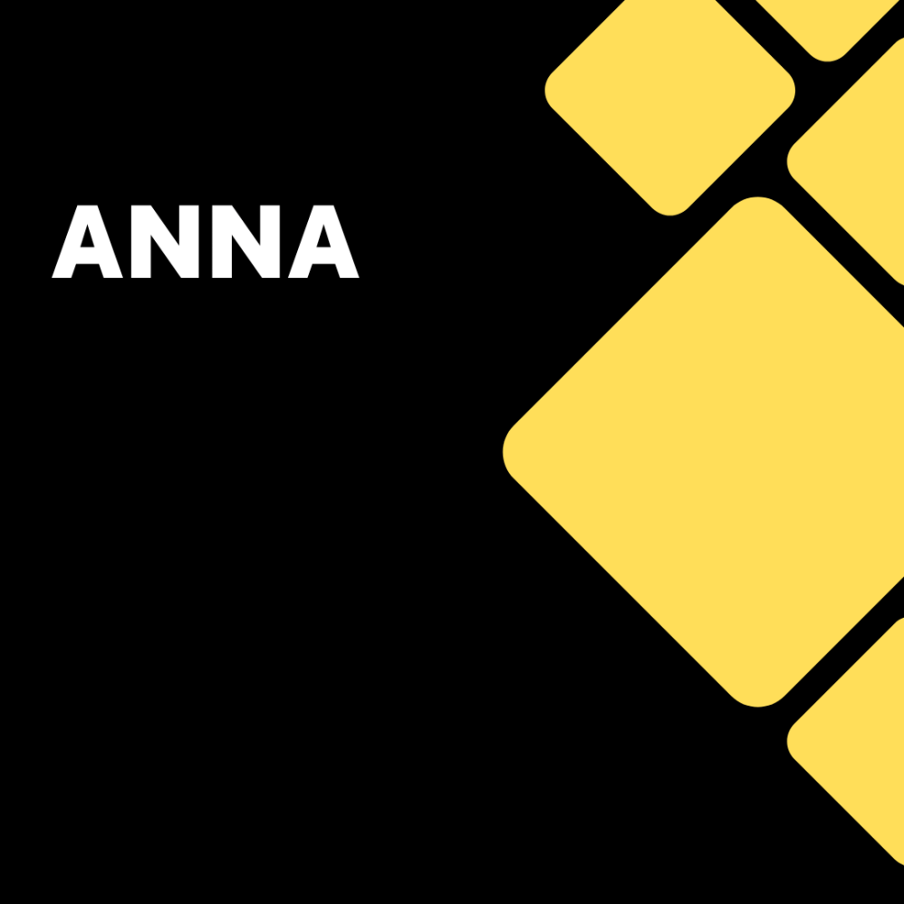
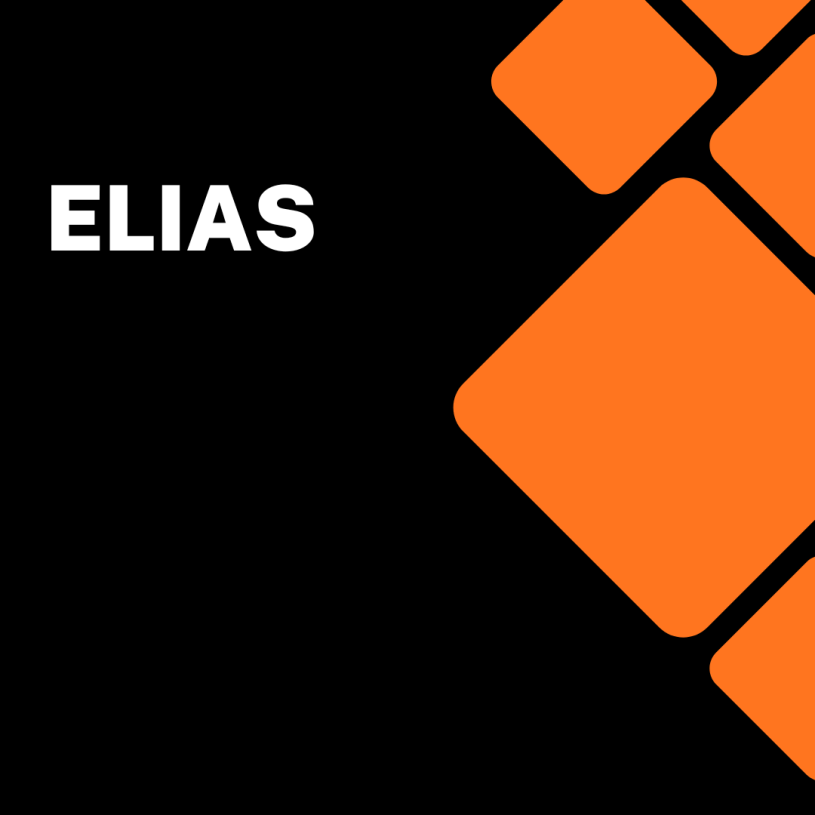

Anna och Elias är på en strandpromenad. De ser en fågel som sitter ute till havs. Anna tar en bild på fågeln. Anna och Elias funderar över vilka möjligheter och utmaningar som kommit med att alla har en kamera tillgänglig i sin smartphone.
En möjlighet som Anna och Elias ser är att man kan ta bilder i ögonblicket. Precis som Anna gjorde med fågeln på stenen ute till havs. En risk Anna och Elias ser är att den ständiga tillgången till kamera kan ha negativa effekter för rätten till privatliv.
Anna och Elias lämnar fågeln på stenen. De fortsätter sin strandpromenad längs med havet. Under promenaden reflekterar de över möjligheter och risker med utbildning online. E-learning är en stor del av min professionella profil. Denna sida är direkt riktad mot yrket E-learning specialist.

Det blev en bra bild på fågeln Elias. Fågeln får mig att fundera över hur man kan få en distanskurs att flyga. Min uppfattning är att det krävs djupa kunskaper inom informations- och kommunikationsteknik, media och lärande för att skapa en attraktiv distanskurs.
Distanskurser kan användas för att sprida information och kunskap om aktuella samhällsfrågor. Dessvärre kan distanskurser också användas för att sprida desinformation. Desinformation skadar individer och samhället i stort.
Det är viktigt att vara källkritisk till den information man använder för att bygga upp en distanskurs. Studenter behöver vara kritiska till det innehåll som förmedlas i samband med distansundervisning.
Artificiell intelligens kommer demokratisera skapandet av innehåll på gott och ont. Fler kommer att kunna skapa relevanta distansutbildningar. Fler kommer att kunna generera desinformation och sprida den via utbildningar online.

Du har helt rätt Anna. Demokratiseringen av innehållet kommer leda till möjligheter och utmaningar. Fler kan ta fram relevanta distansutbildningar som gynnar den enskilde individens personliga och professionella utveckling. Fler kan generera desinformation och sprida den via utbildningar online.
Det blir allt svårare att se skillnad på innehåll som människor skapat och innehåll som har genererats av artificiell intelligens. Bilder och video som är falska kan lätt slinka igenom och publiceras. Det är en oroande utveckling.
Desto längre vi kommer i utvecklingen av artificiell intelligens desto viktigare kommer källkritiken bli. Branschen står inför en utmaning som rör dess valuta. Valutan är tilliten till det innehåll som levereras. Det finns ingen enkel lösning på de utmaningar som den allt snabbare utvecklingen inom artificiell intelligens skapar i relation till e-learning branschen.
Precis Elias. Det som händer för närvarande är både spännande och skrämmande. Kostnaden för lagring av data har fallit. Vi har fått öppen källkod programvara där man kan skapa kurser online. Artificiell intelligens demokratiserar skapandet av innehållet. Sammantaget skapar detta förutsättningar för ett förändrat utbildningssystem.
Möjligheter kommer att finnas i ett förändrat utbildningssystem men också utmaningar och risker. En viktig fråga för mig är vem som kommer bli vinnare och vem som kommer bli förlorare i ett förändrat utbildningssystem.
Konsekvenserna för e-learning sektorn av artificiell intelligens är svåra att överblicka. Däremot tror jag att vi kan vara säkra på att artificiell intelligens kommer att påverka var och en av oss som arbetar inom e-learning sektorn. Vi lever i en tid av snabba förändringar. Snabba förändringar kan skapa oro. Oro som vi behöver ta på största allvar nu och i framtiden.
Utmärkta tankar om möjligheter och risker med utbildning online Anna. Jag funderar mycket över frågan om digital suveränitet. Hur säkerställer vi att vi har kontroll över vårt innehåll och den tekniska infrastruktur som används för att distribuera kurser online?
Det här är en samhällsfråga som handlar om vår stabilitet och vår säkerhet. Vi kan inte skärma oss från omvärlden men vi kan heller inte vara helt beroende av teknik från utlandet. Det är en svår avvägning mellan att å ena sidan använda globala plattformar och å andra sidan värna om den digitala suveräniteten. Min förhoppning är att denna viktiga men svåra fråga ska få ökad uppmärksamhet i samhällsdebatten framöver.
Vår promenad är snart slut. Fågeln sitter kvar på sin sten. Digital suveränitet är en lika aktuell fråga Elias som utvecklingen inom artificiell intelligens. Det ska bli spännande att följa vad som händer inom E-learning sektorn de kommande åren.
Vi har under vår strandpromenad belyst några möjligheter, risker och utmaningar med utbildning online. Det är en diskussion som kommer att behöva fortsätta kontinuerligt även efter att vi har avslutat vår promenad längs havet Elias.
Tack Elias för en intressant diskussion om möjligheter och utmaningar med utbildning online. Nu ska jag ta bussen hem och vila upp mig. Det är en ny dag imorgon. En ny dag betyder nya möjligheter och utmaningar. Hej då.